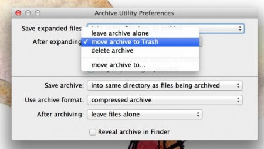

System Tweaks For a Better Mac Experience
August 26, 2012Apply these tweaks by running the corresponding commands in Terminal (found at /Applications/Utilities/Terminal.app).
Disable Dock Autoshow Delay
I hide my dock to maximize the usable area of my screen. By default, there’s a short delay on the autoshowing dock animation. This removes the delay:
defaults write com.apple.Dock autohide-delay -float 0 && killall Dock
Show the Library Folder in Finder (Lion and later)
In Lion and Mountain Lion, the Library folder is hidden from view. This will make it appear in your home folder again:
chflags nohidden ~/Library/
Expanded Save Dialog Boxes by Default
Having to press the little triangle to navigate through your filesystem everytime you save something is annoying. This makes save dialogs expanded by default:
defaults write -g NSNavPanelExpandedStateForSaveMode -boolean true
Screenshot Location
I like to keep all of my screenshots, and I like to keep them in a secure location. The easiest way I found to do this was to create an encrypted sparseimage, mount it, and then change the screenshot location to that volume:
defaults write com.apple.screencapture location /Volumes/Screenshots
killall SystemUIServer
Screenshot Format
Because I never delete my screenshots, I opted to take them in the JPG format, rather than in PNG as screenshots don’t have much transparency/alpha to them and there isn’t a need for higher quality. Run this through terminal to change the file format for screenshots to JPG:
defaults write com.apple.screencapture type jpg
Once again, killall SystemUIServer to apply changes. Other formats that work with this command are tiff and pdf.
Edit: Andy Lester points out in the comments that JPG screenshots are significantly lower in quality than those in the default PNG format. Specifically, he mentions problems with smearing between two colors where they meet and grey hazes around text.
Show Hidden Files in Finder
Working with .htaccess, .gitignore, and other hidden files is a pain with hidden files in Finder. Show hidden files using this:
defaults write com.apple.finder AppleShowAllFiles TRUE
killall Finder
Disable Dashboard
Dashboard widgets are beginning to be replaced by web applications and menubar applications. Dashboard takes up system resources you could be using elsewhere.
defaults write com.apple.dashboard mcx-disabled -boolean YES
killall Dock
Remove iTunes Store Links in Library
By default, a little arrow appears next to each song in the iTunes library linking to the iTunes Store. This will give the arrow some actual useful functionality by having it point to other albums in the iTunes library:
defaults write com.apple.iTunes invertStoreLinks -bool YES
Git Ignore all .DS_Store files
Rather than creating an individual .gitignore file for each of your git projects to ignore .DS_Store files, you may simply ignore them globally using this:
git config --global core.excludesfile ~/.gitignore
echo .DS_Store >> ~/.gitignore
Dim Icons of Hidden Applications in the Dock
This will have the dock indicate which applications you have hidden by dimming and making transparent icons in the dock:
defaults write com.apple.Dock showhidden -bool YES
killall Dock
Hide Desktop Items
This will hide all icons and items on your desktop. If you’re one of those people who prefers a clean desktop and uses Finder windows exclusively for file management, then give this a go:
defaults write com.apple.finder CreateDesktop -bool false
Sync Files in Any Location with Dropbox
ln -s /Users/you/path-to-file-or-folder /Users/you/Dropbox
Be sure to change the “you” to your username and the latter path if you chose a custom Dropbox folder location.
Edit: As Egypt Urnash points out in the comments, Dropbox will follow normal Mac aliases. There is no need to create symbolic links.
Disable Crash Dialogs
This will stop the little dialog windows that appear everytime an application crashes or you force quit an app:
defaults write com.apple.CrashReporter DialogType none
Delete Archives after Extracting
Open /System/Library/CoreServices/Archive Utility.app, go to Preferences, and choose to delete archives after extracting or expanding them.

Skip Disk Image Verification
If you install new software often or mount disk images often, you can save some time by skipping the image verification process by running this:
defaults write com.apple.frameworks.diskimages skip-verify TRUE
Disable Window Shadows in Screenshots
The drop shadows of windows makes screenshots larger than they need to be. Run this to not include them in screenshots:
defaults write com.apple.screencapture disable-shadow -bool true
killall SystemUIServer
Reverting Back to Default
To undo most of these changes, replace “defaults write” with “defaults delete” to revert to the default setting. Alternatively, simply replace “true” with “false”, “0″ with “1″, or “yes” with “no” and vice versa.
Comments